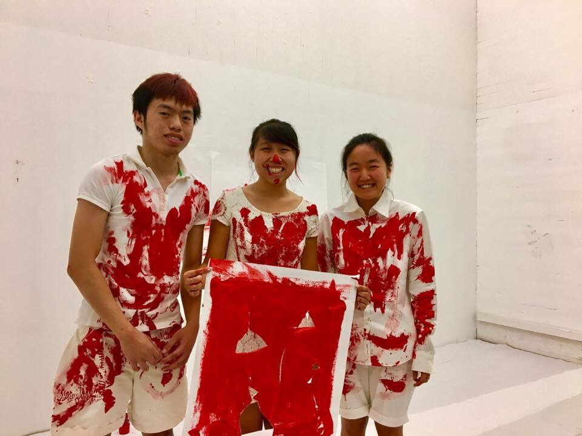
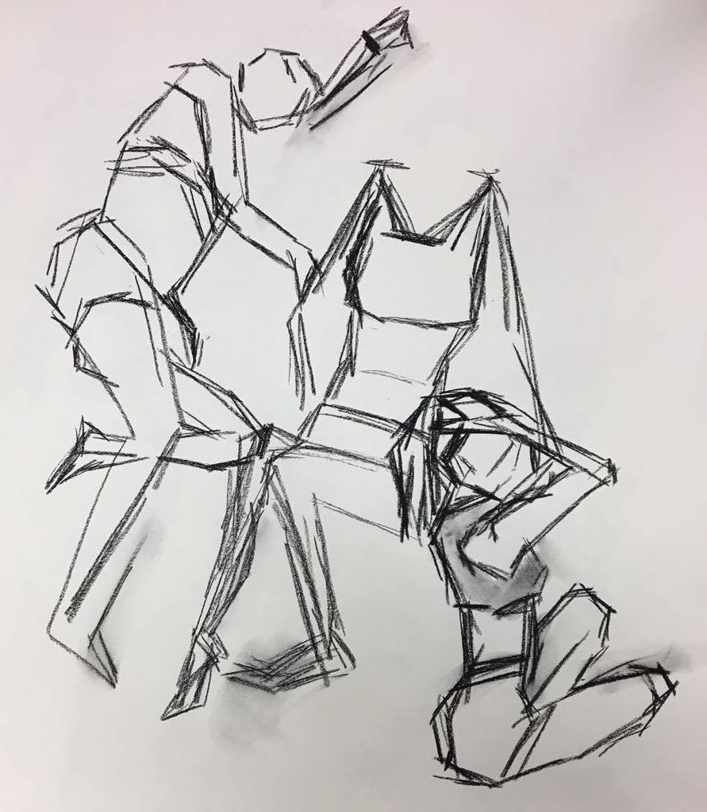

Fall 2016
Final Project piece for 21M.645 Motion Theater. Inspired by Oresteia, Fontona and "I am sitting in a room". Actors (left to right in the image above): Lawrence Wu, Wei Low, Hane Lee. Watch our production on Youtube!

Spring 2017
Over the course of the semester in 21M.601 Drawing for Designers, I created drawings and mixed media pieces. This was my first formal fine arts class since elementary school! Check out my work in the class online gallery!